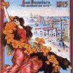
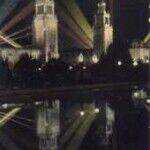
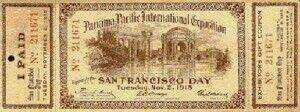
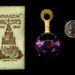
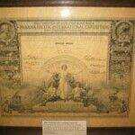
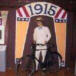
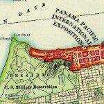

A Sense of Wonder: The 1915 San Francisco World’s Fair
Introduction

The building of the canal itself was, of course, an incredible feat: Over 50 years in the making, it was dubbed “The 13th Labor of Hercules.” And so was the creation of the Exposition, beginning with the placement of 300,000 cubic yards of fill to create land for the site from what had formerly been San FranciscoBay and is now San Francisco’s Marina district. The times were heady, and rapid strides were being made in engineering and manufacturing. Consider just a few notable aspects:
- The fair featured a reproduction of the Panama Canal that covered five acres. Visitors rode around the model on a moving platform, listening to information over a telephone receiver.
- The first trans-continental telephone call was made by Alexander Graham Bell to the fairgrounds before the fair opened, and a cross-country call was made every day the fair was open.
- The ukulele (originally a Portuguese instrument, but adopted by the Hawaiians) was first played in the United States at the 1915 fair, creating a ukulele craze in the 1920s.
- An actual Ford assembly line was set up in the Palace of Transportation and turned out one car every 10 minutes for three hours every afternoon, except Sunday. 4,400 cars were produced during the Exposition.
- The entire area was illuminated by indirect lighting by General Electric. The “Scintillator,” a battery of searchlights on a barge in the Bay, beamed 48 lights in seven colors across San Francisco’s fog banks. If the fog wasn’t in — no problem: A steam locomotive was available to generate artificial fog.
- Personalities abounded: Thomas Edison and Henry Ford were honored at a luncheon; Edison had perfected a storage battery that was exhibited at the fair. A pre-teen Ansel Adams was a frequent

visitor. - The Liberty Bell made a cross-country pilgrimage from Philadelphia to be displayed at the fair. Notables, such as Thomas Edison, were often photographed with the bell.
- The MachineryPalace was the largest wooden and steel building in the world at the time; the entire personnel of the U.S. Army and Navy could have fit inside. The first-ever indoor flight occurred when Lincoln Beachey flew through the building before it was completed.
In 1915 the fair was a popular destination for a San Francisco summer outing by bicycle, cable car, auto or other form of transportation.
Financing the exhibition
The Panama-Pacific Exposition began as a 1904 proposal by San Francisco’s Rueben Hale, a prominent merchant, when he convinced fellow directors of the Merchant’s Association that the city should hold an exposition to celebrate the opening of the Panama Canal. A bill introduced in the U.S. Congress to provide $5,000,000 in seed money failed to pass, and the 1906 earthquake put the project on hold. Even the earthquake failed to discourage San Francisco’s entrepreneurial spirit. The Pacific Exposition Company was formed in 1906 to raise the needed funds to finance the project.
While San Francisco was recreating itself, the money poured in, with individual amounts of up to $250,000 pledged. About $5,000,000 was raised from pledges, and the state of California created a tax-funded $5,000,000 grant to help fund the exposition.

Architecture of the Panama-Pacific International Exposition
One of the greatest challenges the designers of the Exposition was the need to create an overall design that would unify the various structures and exhibits. The Exposition had to accommodate varied and multiple structures and exhibitions and thousands of visitors; it had to be both functional and impressive; and it had to complement the natural beauty of its San FranciscoBay setting.
George W. Kelham was chosen as chief of architecture. Working with the architectural council, he developed an elegantly simple plan. It grouped the eight main exhibition palaces together in a single block. This main block was then flanked on the eastern end by the Palace of Machinery and on the western end by a neo-classic fantasy monument, Bernard Maybeck’s Palace of Fine Arts. This grouping was crowned by an Italianate main 
William B. Faville surrounded this area with a wall designed to reflect the classic eras of architecture thus creating a unifying design for the block. The monumental exhibition palaces formed a core that held together two outer and very different zones of the Exposition. At the western end beyond the Palace of Fine arts were exhibition halls built by participating countries and states. At the eastern end was a sixty-five acre amusement park and concession district called The Zone. All together, the Fair occupied 635 acres. The total construction cost was about $15,000,000 and the project consumed over 100 million board feet of lumber.
The Palace of Machinery, styled after the Roman Baths of Caracalla, was the largest wood and steel building in the world at that time. It measured nearly a thousand feet in length, 367 feet in width and was 136 feet high. More than 2,000 exhibits were displayed inside on two miles of aisles. The soldiers and sailors of Uncle Sam’s 1915 Army and Navy could have fit into the MachineryPalace with room to spare. Aviator Lincoln Beachey flew through the building before it was completed in the first-ever indoor flight. His speed through the building — a blazing 40 miles per hour.
The Column of Progress commanded the entire north front of the Exposition. Symmes Richardson, the architect drew his inspiration from Trajan’s Column in Rome. It completed the symbolism of the Exposition’s sculpture and architecture, as the joyous Fountain of Energy at the other end of the north-south axis began it.
The Palace of Horticulture designed by Bakewell and Brown is the largest and most splendid of the garden structures. Byzantine in its architecture it suggested the Mosque of Ahmed I at Constantinople. This was the palace of the bounty of nature; its adornment symbolized the rich yield of California fields.
The Palace of Education combined Spanish Renaissance and Moorish designs. In the Tympanum above the central portal, sculptor Gustav Gerlach created the group “Education.” In the center, the teacher sits with her pupils under the Tree of Knowledge; on the left, the mother instructs her children; on the right the young man, his school days past, works out a problem in science. Thus the group depicts the various stages of education.
The California Building designed by Thomas H. Burditt was by far the largest state building ever erected at the time. From its façade, Fray Junipero Serra looks over a charming garden which represents the private of Santa Barbara Mission, but this Mission style building was grander than those built by the padres of California. It covered five acres! Inside walls were hung with tapestries loaned by Mrs. Phoebe A. Hearst. Displays from the fifty-eight California counties were presented.
Color was a major unifying element in the design of the Exposition. Jules Guerin a colorist , painter, and designer oversaw the Exposition’s color schemes. He created a specially blended gypsum and hemp plaster material in hues of old ivory that mimicked the travertine marble used in ancient Rome. This plaster was applied over most of the buildings, statues, and walls. Eight accent colors were used throughout the Exposition:
- French green for garden lattices
- Deep cerulean blue in recessed panels and ceiling vaults
- Pink-orange for flagpoles
- Pinkish-red flecked with brown for the background of colonnades
- Golden-burnt-orange for moldings and small domes
- Terra cotta for other domes
- Gold for statuary
- Antique green for urns and vases.
Very romantic and ornate sculptures were typical of the era and profusely adorned the Fair and its structures. Karl Bitter, Director of the Department of Sculpture, and A. Stirling Calder, the Exposition’s acting chief of sculpture, commissioned more than fifteen hundred sculpture from artists around the world. These stood on columns, in niches, in fountains, and as free-standing groups throughout the Expositions. In the South Garden was the Calder Fountain of Energy. Resting in the center of the pool, and supported by a circle of figures representing the dance of the oceans, is the Earth, surmounted by a figure of Energy, the force that dug the canal with Fame and Victory blowing bugles from their shoulders.
Bernard Maybeck, the designer of the Palace of Fine Arts, believed that architecture here in California, to be beautiful, needed only to be an effective background for landscape. He was able to achieve this end in his design. The sweeping arc of the building on the shore of the lagoon is a mere backdrop for the trees and plants. The central rotunda ‘s entablature contains Bruno Louis Zimm’s three panels representing “The Struggle for the Beautiful.” On an altar before the rotunda knelt Robert Stackpole’s figure of Venus, representing the Beautiful to whom all art is servant. Robert Louis Zimm created the panel in front of the altar on pictured Genius, the source of inspiration. Above, in the dome, Robert Reid’s eight murals symbolize the conception and birth of art, its commitment to the earth, and its progress and acceptance by the human intellect.
A three acre Japanese garden was created at the south entrance to the Fine Arts Palace. This garden was comprised of rocks up to three tons in weight, 25,000 square feet of turf, 1300 trees, 4400 small plants, and tons of small stones and gravel brought from Japan. The Golden Pavilion, a copy of a Japanese temple, and two graceful teahouses were located within this Japanese garden, which was staffed largely by the government of Japan.
As Ben Macomber in his book The Jewel City states, “No other of the palaces would wear so well in its beauty if it were set up for the joy of future generations. It would be a glorious thing for San Francisco if the Fine Arts Palace could be made permanent in Golden Gate Park.” As we know his words were heeded and the Palace of Fine Arts still stands in all of its beauty, albeit in its original site, rather than in Golden Gate Park.
The Palace of Fine Arts contained what the International Jury declared to be the best and most important collection of modern art that had been yet assembled in America. The war in Europe did prevent some countries like Russia and Germany from sending art works, it led other countries such as France and Italy to send more than they might otherwise have sent.
Ernest Coxhead, the San Francisco architect who designed the home of Dr. Thomas Williams that now houses the Museum of American Heritage, was instrumental in developing the detailed plans for the 1915 Exposition. His plans were presented to the US Congress in 1911 during the competition between San Francisco and New Orleans as to which city would have the privilege of hosting the celebration of the opening of the Panama Canal.
Lighting at the fair
Lighting at the fair was the crowning achievement. W.D’Arcy, who was called “the Aladdin of the 1915 City Lumminous,” was loaned to the Exposition by a young General Electric company eager to promote the miracles of its technology. Never before had an attempt been made to light an exposition as this one was lighted.
The massive exhibition area was illuminated at night by indirect lighting of the softest, warmest, and mellowest of colors, all seemingly without source. The radiance of the 43 story Tower of Jewels came from huge searchlights aimed at it from a circle of hidden stations. Perhaps the most exquisite and dazzling feature of the fair, the Tower, with its 102,000 pieces of glittering multicolored cut Bohemian glass, refracted and reflected both sunlight and nighttime illumination.
The many-colored fan of enormous rays, the Scintillator, which stood against the sky behind the Exposition, was produced by a searchlight battery of thirty-six great projectors mounted on the breakwaters of the Yacht Harbor. It was manned nightly by a company of marines, who manipulated the fan of lights in precise drills at night.
Around the walls of the palaces stood tall Venetian masts, topped with shields or banners. Concealed behind the heraldic emblems were powerful magnesite arc lamps. Other concealed lights gleamed through the waters of the fountains. In the Court of the Universe they were white, in the Court of the Seasons green, and in the Court of the Ages they were red. The palaces themselves were not externally illuminated at night, though they appeared to be lighted internally. Behind each window and doorway were hung strings of lights backed by reflectors.
The illumination was at its best on a misty night when the moisture in the air provided a screen to catch the colored lights and create the effect of an aurora overhead. If natural fog wasn’t present to supply this background for the great beams of the Scintillator, clouds of steam from a steam locomotive positioned on the breakwater provided the missing mist.
Sculpture at the fair
Sculpture was an integral part of the Panama-Pacific International Exposition. A Stirling Calder was the acting chief of sculpture, and under his direction was a large staff of skilled workmen, hired to turn out thousands of sculptures and decorations. These works were made of plaster and tinted to match or compliment the buildings.
“The End of the Trail” by James Earle Fraser was one of the most popular and poignant works of art at the fair. It showed an Indian astride his exhausted horse, representing the Native American’s failed battle against encroaching civilization.
Many other notable sculptures were also created:
- Robert Aikens depicted man’s progress from birth to death in the “Fountain of the Earth.
- A.A. Weinmann’s statues “The Rising Sun” and “The Setting Sun” were placed in the” Court of the Universe.
- Daniel Chester French’s statue depicted an angelic figure with its creation of man and woman below.
- C.L Pietro created one of the strongest sculptures in “The Mother and the Dead,” protesting the ‘great war’ which was leaving Europe with only the aged and the children.
 A.Stirling Calder had several sculptures. In front of The Tower of Jewels stands his joyous “Fountain of Energy” a depiction of the union of the Atlantic and Pacific by the Panama Canal. He also created the “Star Maidens” that adorned the Tower of Jewels.
A.Stirling Calder had several sculptures. In front of The Tower of Jewels stands his joyous “Fountain of Energy” a depiction of the union of the Atlantic and Pacific by the Panama Canal. He also created the “Star Maidens” that adorned the Tower of Jewels.- The sculpture “Nations of the West” was located in the Courtyard of the Universe, atop the Arch of the Setting Sun. This sculpture, the joint work of A. Sterling Calder, Leo Lentelli, and F. G. R. Roth was comprised of figures representing an American Indian, pioneers gathered around the Prairie Schooner, and the figures of Mother of Tomorrow and Spirit of Enterprise.
Industrial displays
The Exposition emphasized contemporary events and technology from the previous decade. The moving-picture machine was extensively used to illustrate industrial progress in various exhibits, and the presence of both mechanical and electrical devices was larger than life in many cases.
Exhibits in the Palace of Machinery showcased Diesel engines, water-driven power plants and numerous electrical motors and communication devices. On opening day, President Woodrow Wilson started, by wireless, the Diesel-driven generator that supplied all of the direct current used in the Palace.
The Underwood Exhibit in the Palace of Liberal Arts featured a $10,000 typewriter, “an exact reproduction of the machine you will eventually buy.” It was 1728 times larger than the standard Underwood typewriter and weighed 14 tons. News stories were typed on it daily.
But the greatest amount of space was given to labor saving devices, safety inventions and machines that increased the comfort (if not the comfort level) of humanity. The overwhelming theme was that machines would play a major role in making life more comfortable and enjoyable.
Agriculture
Today we consider agriculture an industry, but the typical fair-goer of 1915 considered the growing of ornamental plants and foodstuffs two separate endeavors, neither of them “industrial”. The Fair reflected this outlook, incorporating three display halls related to the growing and production of agricultural products: The 
The Palace of Horticulture displayed beautiful flowers and ornamental plants, and was located adjacent to the Palace of Forestry near the Baker Street entrance to the Fairgrounds. As might be expected, the Forestry building was concerned with the growing of trees and the production of lumber.
The Entertainments
No fair is complete without its sideshow, and the fair’s eastern section, known as “The Zone”, occupied a space the equivalent of seven city blocks in area and contained a variety of entertainments, rides, commercial stands, souvenir shops, and other typical fair staples. However, some of the things to be found in the zone were very untypical, including the “Aeroscope”, a ride that consisted of a small two-story structure mounted on the end of a 285 foot swing-arm. It was designed and built by Joseph Strauss, the designer and builder of the Golden Gate Bridge. Riders were treated to an aerial view of the fair and nearby San Francisco. It was especially spectacular at night. Another popular ride circled a five-acre operating model of the Panama Canal. For their 50 cent admission, passengers occupying one of the hundred chairs circling the model on elevated tracks could learn about the canal through earphones during their half-hour ride. The soundtrack came from a phonograph. Fairgoers could also observe babies (real) in incubators, experience a rowdy 49’ers prospecting camp (not spring training), and a submarine ride. They could choose to be entertained, awed, scared, impressed and fed at a seemingly innumerable number of rides, restaurants and concessions.
Other entertainments might be experienced throughout the fair area, including air shows, concerts, demonstrations of arts, crafts and national culture. The air shows were quite popular, drawing crowds of 10,000 or more spectators, although daredevil pilot Lincoln Beachy was killed during one of the air exhibitions when his plane experienced a structural failure and crashed.
The Zone gathered much publicity for the 1915 fair, but didn’t provide the financial returns hoped for by its operators. Partly because of its somewhat isolated position at the east end of the fair and partly because of a rainy 1915 spring, many attractions got off to a slow start. Some of the concessions seemed overpriced, charging 50 cent admissions in a period when the average daily wage of a factory worker was about $1.00 (10 cents was more typical). With the pavilions and other events of the fair available at no charge once the 50 cent admission was paid, The Zone seemed overpriced to many.
After the lights went out
The final midnight arrived, the last music, “Taps”, was played from the Tower of Jewels, the last fair-goer departed and the lights of the 1915 World’s Fair went out forever. The Tower of Jewels, built at a cost of $413,000, was sold to a demolition firm for $9,000. Individual jewels were sold to souvenir hunters for a dollar each. Some prominent statues, including “Nations of the East” and “Nations of the West”, were not salvageable and were destroyed along with the arches on which they were mounted. By 1917, the work was done, with structures demolished and the land (or the landfill, at least) was restored. Over $900,000 was realized from the salvage effort. Between February 20, 1915 (opening day) and December 4, the closing day, over 18 million people passed through the entrance gates of the 1915 Panama-Pacific International Exposition. The Fair generated the funds to construct San Francisco’s Civic Auditorium, and an additional $1,000,000 surplus, as well.
What else happened in 1915?
While the fair got a lot of newspaper ink (and deserved it), a lot was going on elsewhere in the world, with many events just the first indicators of major trends.

Traces of the fair
The Panama-Pacific International Exposition is long over, but traces still remain. Some of its remnants can still be seen today.
San Francisco
The Palace of Fine Arts, designed by Bernard Maybeck, is the only major structure still standing on its original site. It now houses the Exploratorium.
“Earth, Air, Fire and Water” These murals by Frank Brangwyn can be seen in the Herbst Theatre of the Veterans War Memorial Building.
“The Arts and the Victorious Spirit”, a mural by Lucia and Arthur Matthews, was originally located at the entrance of the Court of the Four Seasons. It is now located in the lobby of the Mechanics Institute.
“Pioneers Leaving the East” and “Pioneers Arriving in the West”, murals by Frank Vincent du Nord, originally hung in the Court of the Universe. They were on display in the Main Library, but are currently in storage.

The Marina residential district is built upon the landfill laid down for the Fair. The far western end of the fairgrounds was once Crissy Field, a military airstrip, but has now been converted into parkland and is part of the Golden Gate National Recreation Area.
The pipe organ of the San Francisco Civic Auditorium was located in the Festival Hall of the 1915 fair. It was the second largest pipe organ in the world when constructed.
The entry gate of the Japanese Tea Garden in Golden Gate Park and the Pagoda were elements of Japan’s exposition exhibit.
San Mateo County
The Administration Building of the Japanese Exhibit was moved by barge to Belmont where it became, at first, a residence, then a speakeasy and eventually “The Vans” restaurant. The structure, now much modified, is sometimes confused with the tea house displayed at the exhibition.
Oakland and East Bay
A 20″ refracting telescope, originally located in the Palace of Liberal Arts, is still in use at the Chabot College observatory.
Marin County
The building housing the Victor Talking Machine Company was moved to San Rafael, where it is now the home of the Improvement Club.
Sacramento
“The Overfair Railway”, a 1/3 scale train, can be seen at the Railroad Museum.
Oklahoma City
“The End of The Trail”, a well known sculpture by James Earle Fraser, originally located in the Court of the Palms, is now in the Cowboy Hall of Fame in Oklahoma City.
Other Pan-Pacific Leftovers
Auto Train
The auto train, a string of open cars pulled by a tractor and used to move visitors about the grounds of an exposition or other attraction, was invented for, and first used at, the 1915 fair. Manufactured by the Fageol Motors Company in Oakland, they were labeled as “Fadgl Auto Trains” to approximate the actual sound of the oddly pronounced name. The trains were used in Chicago’s Lincoln park for a time after the end of the fair. The assets of Fageol Motors were eventually absorbed by Peterbilt Motors Company.
“Fatty and Mabel at the Fair”
To advertise the fair, a film starring Fatty Arbuckle and Mabel Normand was made in 1915. It played in movie houses all over the country.
“Hail California”
Composed by Camille Saint-Saens and commissioned specifically for the fair, this symphonic piece was first performed in the fair’s Festival Hall.
Bibliography
Websites
Exploratorium: Pan Pacific International Exposition The Exploratorium is housed in the last remaining building from the 1915 Fair. This site has reproduced stereograph images of the fair.
Museum of San Francisco: Panama Pacific Exposition of 1915 Photos and history of the 1915 exposition. Includes a Powerpoint presentation with 16 hand colored exposition scenes.
Panama Pacific International Exposition Comprehensive survey of the Panama Pacific International Exposition This site also has much information on San Francisco history and memorabilia.
Remnants of a Dream This site traces the remains of the 1915 Panama-Pacific Exposition.
Publications
Americans and the California Dream, Kevin Starr
Oxford University Press, New York, 1973
The Anthropology of World’s Fairs – San Francisco’s Panama-Pacific Exposition of 1915, Burton Benedict
Scholar Press, Berkeley, 1983
The Blue Book: The Official Souvenir and View Book of the Panama-Pacific International Exposition, Robert A. Reid
Panama-Pacific International Exposition, San Francisco, 1915
San Francisco’s Enchanted Palace, Ruth Newhall
Howell-North Books, Berkeley CA, 1967
San Francisco Invites the World, Donna Ewald and Peter Clute
Chronicle Books, San Francisco, 1991
The Story of the Exposition (5 volumes), Frank Morton Todd
GP Putnam, New York 1921
Credits
Photography: Wayland Lee
Exhibit staging: MOAH Exhibits Committee
MOAH wishes to give special thanks to Donna Ewald Huggins, whose incomparable collection of artifacts from the 1915 fair formed the backbone of this exhibit. The model of the Panama Canal was constructed by Dick Clark.
Additional items were loaned by:
The Seymour Pioneer Museum, Society of California Pioneers
Beth Bunnenberg
Jan Murphy
Miriam and William Wehrend
Casa dei Bambine – Montessori School